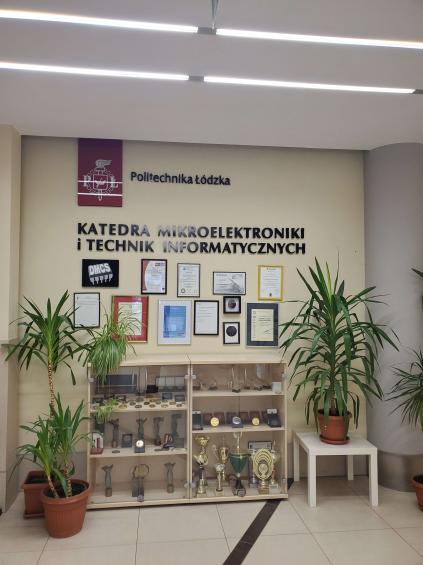
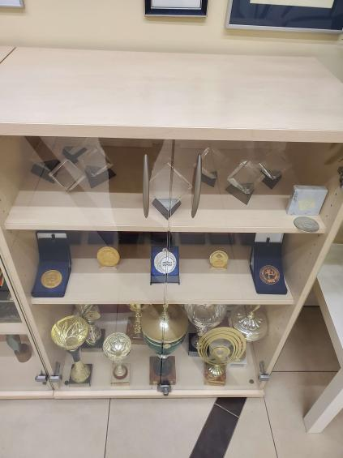
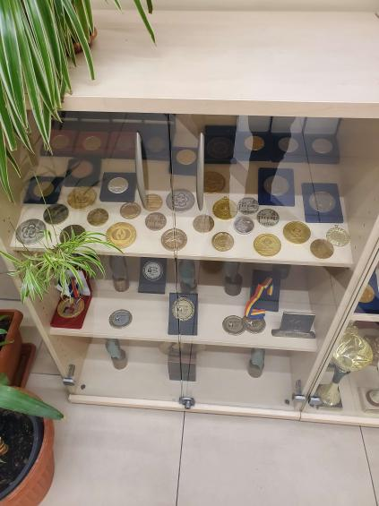

University
Exploring the Achievements of the Lodz University of Technology (Politechnika Łódzka)
Lodz University of Technology (Politechnika Łódzka) has recently received recognition for its excellence in teaching and research. The university has been awarded several medals and prizes for its contribution to science, technology, and innovation.
One of the most notable awards received by the university is the "Innowator Wprost" award. This prestigious award is given to companies and institutions that are known for their innovative approach to business and technology. Lodz University of Technology received this award in recognition of its research and development activities, which have contributed significantly to the advancement of science and technology in Poland.
The university has also been awarded the "Top 10 Universities in Poland" medal by the Perspektywy Education Foundation. This medal is awarded based on a comprehensive ranking system that takes into account various factors such as research quality, internationalization, and teaching quality. The fact that Lodz University of Technology has been included in this list is a testament to its commitment to providing high-quality education and research.

Reward 2
Another notable award received by the university is the "Ekozłota Marka" (Eco-Golden Brand) medal. This award is given to companies and institutions that are committed to sustainable development and environmental protection. Lodz University of Technology received this medal for its various initiatives aimed at reducing the university's carbon footprint and promoting sustainable practices.
Lodz University of Technology has also received recognition for its entrepreneurship and innovation. The university was awarded the "Noble Prize of Polish Entrepreneurship" in the category of "University Supporting Entrepreneurship". This award was given in recognition of the university's efforts to promote entrepreneurship among its students and alumni, as well as its collaboration with local businesses and startups.
These awards and medals are a testament to Lodz University of Technology's commitment to excellence in education, research, innovation, and sustainability. The university's continued success in these areas is a source of pride for its students, faculty, staff, and the wider community.

Reward 3
Moreover the Lodz University of Technology (Politechnika Łódzka) has a long-standing reputation for academic excellence and innovation. Founded in 1945, the university has grown to become one of the largest technical universities in Poland, with over 20,000 students and 2,000 academic staff members.
The university's six faculties offer a diverse range of programs in engineering, technology, science, and economics, with a strong focus on interdisciplinary research and collaboration. Among its notable programs are the Faculty of Electrical, Electronic, Computer and Control Engineering, the Faculty of Material Technologies and Textile Design, and the Faculty of Mechanical Engineering.
In recent years, the Lodz University of Technology has received numerous awards and accolades for its outstanding academic and research achievements. In 2019, the university was awarded the prestigious "HR Excellence in Research" designation by the European Commission, which recognizes the university's commitment to providing a supportive and stimulating work environment for researchers.
br>
The university has also received recognition for its innovative research projects and contributions to industry. In 2018, a team of researchers from the Faculty of Electrical, Electronic, Computer and Control Engineering received the prestigious "Best of the Best" award from the European Space Agency for their work on the development of advanced guidance, navigation, and control systems for space applications.

Reward 4
Moreover, the Lodz University of Technology is also active in international research collaborations and partnerships. The university is a member of several international research networks, including the European University Association, the European Materials Research Society, and the Conference of Rectors of Academic Schools in Poland.
In addition to its academic and research achievements, the Lodz University of Technology is also recognized for its commitment to sustainability and social responsibility. The university has implemented several initiatives to reduce its carbon footprint and promote sustainable practices, including the construction of energy-efficient buildings and the installation of renewable energy sources.
In conclusion, the Lodz University of Technology's numerous awards and medals are a testament to its commitment to academic excellence, research innovation, and social responsibility. With a diverse range of programs and a vibrant research community, the university continues to be a leading institution of higher learning in Poland and beyond.